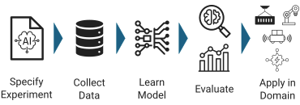

Data-Driven Modeling of Hybrid Automata within a Unified Model Learning Framework
Tutorial Description
Understanding the behavior of complex Cyber-Physical Systems (CPS) requires models that capture both their physical dynamics and embedded control logic. As systems scale in complexity, manual modeling becomes infeasible, creating a strong need for unified workflows that guide practitioners from data collection to model deployment in a principled manner.
Hybrid automata are a powerful and interpretable model for CPS, capturing both continuous physical dynamics and discrete mode transitions. However, identifying these directly from data is challenging.
This tutorial introduces Flowcean as an enabling framework for data-driven CPS modeling. Participants will learn to construct modeling pipelines using diverse learning algorithms while maintaining a consistent interface. We will demonstrate how to apply modern hybrid system identification algorithms to data from simulated cyber-physical systems, allowing for the creation of interpretable models that support monitoring, prediction, and debugging.
Learning Objectives
By the end of this tutorial, participants will:
- Understand the structure of data-driven modeling pipelines for CPS.
- Learn how Flowcean unifies machine learning workflows across multiple libraries (e.g., scikit-learn, PyTorch).
- Build and evaluate modeling pipelines using regression trees and neural networks.
- Understand the principles of hybrid automaton identification: flow function learning, segmentation, and guard condition discovery.
- Apply a modern hybrid system identification algorithm to data from a simulated cyber-physical system.
- Compare interpretable hybrid models with black-box baselines.
Methodology & Framework

The Flowcean Learning Pipeline: Unified abstractions for data sourcing, transformation, learning, and evaluation.
Hybrid Automata Identification: Alternating between learning flow functions, segmenting data, and discovering guard conditions.
Tutorial Agenda
This half-day tutorial consists of two main parts, combining conceptual lectures with hands-on exercises.
Part I: Unified CPS Modeling
Focus: Flowcean workflow and preparation for hybrid identification.
Lecture (45 mins)
- Data acquisition from simulated or real CPS
- Feature engineering and preprocessing
- Learning strategies and integration (scikit-learn, PyTorch)
- Evaluation strategies, metrics, and analysis
Hands-on (45 mins)
- Load and transform CPS-relevant data
- Train baseline models (regression trees, neural networks)
- Evaluate accuracy, runtime, and generalization
- Store and reload models using Flowcean
Part II: Hybrid Automata Identification
Focus: Interpretable modeling paradigms and advanced strategies.
Lecture (45 mins)
- Motivation for hybrid models in CPS
- Flow functions and physical interpretation
- Segmentation of time-series data
- Guard conditions and transition logic
Hands-on (45-60 mins)
- Load datasets or generate simulation data
- Run the segmentation and identification pipeline
- Infer guard conditions and construct a model
- Compare interpretability vs. black-box baselines
Prepare Before The Workshop
Install Flowcean locally, run the smoke test, and keep the exercise checkpoints open during the hands-on session.
Open Participant GuideOrganizers
Maximilian Schmidt
Institute of Embedded Systems, TUHH
Maximilian Schmidt is a research assistant and doctoral student at the Institute of Embedded Systems at Hamburg University of Technology (TUHH). He is a core developer of Flowcean and works on data-driven modeling of cyber-physical systems. He is part of the research project AGenC and has published several peer-reviewed papers on data-driven modeling for CPS.
Swantje Plambeck
Institute of Embedded Systems, TUHH
Swantje Plambeck is a research assistant and doctoral candidate at the Institute of Embedded Systems at Hamburg University of Technology (TUHH). Working in the group for computer engineering since 2020, she specializes in data-driven modeling of cyber-physical systems. She is a developer of Flowcean and has published more than 20 peer-reviewed journal, conference, and workshop papers.